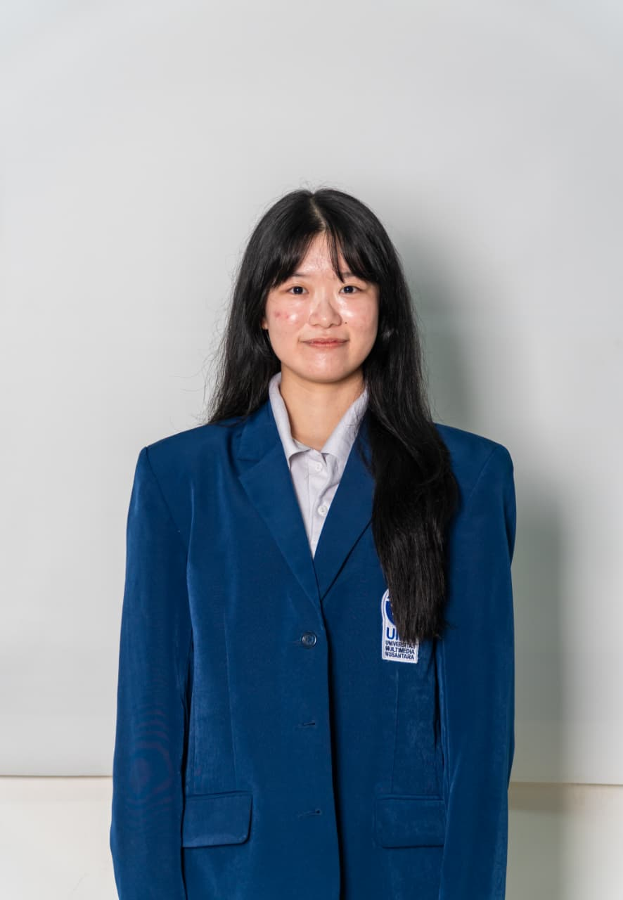

Mobile development
Building everyday experiences that feel natural in your hands.
WELCOME TO MY PORTFOLIO
Informatics student & digital product enthusiast
Exploring mobile development, software engineering, and UI/UX at Universitas Multimedia Nusantara. I enjoy bringing ideas to life through useful applications and thoughtful interfaces.

A little about the person behind the projects.
I am an Informatics student at Universitas Multimedia Nusantara with an interest in Mobile App Development, Software Development, and UI/UX Design. I enjoy building digital products that are functional, reliable, intuitive, and user-friendly.
Through academic projects and collaborative work, I have gained experience in developing applications, designing interfaces, and solving technical problems through structured and creative approaches. I learn best by making things, asking questions, and working with others.
I am growing as a software developer while exploring mobile development, software engineering, and UI/UX. Continuous learning, teamwork, and attention to detail guide the way I work.
A collection of applications, interfaces, and experiments.
Each one, a new opportunity to learn.
Newest to oldest · by project start date
A growing collection. Three projects are in progress, with completion planned for December 2026.
The tools I work with, and the areas I keep exploring.
Building everyday experiences that feel natural in your hands.
Connecting useful interfaces with the systems behind them.
Understanding people, testing ideas, and exploring new possibilities.
Building a stronger foundation, one course at a time.
2026 · COURSE COMPLETED
Foundations of artificial intelligence, machine learning, neural networks, and deep learning applications.
2025 · COURSE COMPLETED
Database management, SQL operations, relational database concepts, and openGauss technologies.
AUG 2024 — JUN 2028 · EXPECTED
Bachelor of Informatics · Tangerang, Indonesia
The teams and experiences that taught me how to show up, stay organized, and make things happen together.
KOMPAS CORNER UMN
Supported daily operations, administrative needs, facility coordination, and room readiness. Worked with a five-member team to keep the space organized and resolve reservation and equipment needs.
OMB UMN 2025
Coordinated food and beverage preparation and distribution for committee members and participants. Collaborated with a 20-member team across four event days, adapting to schedules and on-site needs.
Have a project, an opportunity, or a question? I’d love to hear from you.
Based in Tangerang, Indonesia
Good things often start with a simple hello.